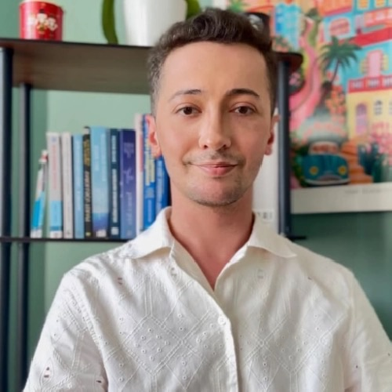

İnsanı anlamak, yalnızca bir bilim değil; aynı zamanda bir sanattır.
Psikolojinin bilimsel temelleriyle felsefi sorgulamayı birleştirerek, yaşamınızdaki tekrar eden döngüleri fark edip dönüştürmenize eşlik ediyorum.

Sizin hikâyeniz, sizin ritminiz
Çalışmalarımda sizin biricik yaşam öykünüze odaklanıyorum. Amacım; güven ve iş birliği içinde, yaşamınızdaki tekrar eden döngüleri fark edip dönüştürmenize eşlik etmek.
Bireysel terapilerde Bilişsel Davranışçı Terapi (BDT) ve Şema Terapi; çift terapilerinde ise Gottman ekolü ekseninde çalışıyorum. Yaşantınızı yalnızca yüzeysel belirtiler üzerinden değil; kimlik, değerler ve varoluşsal anlam arayışınız bağlamında, yargısız bir alanda ele alıyorum.
- Bilimsel yaklaşım
- Klinik titizlik
- Etik ve gizlilik
Çalışma alanlarım
Her süreç kişiye özel şekillenir. Size uygun yaklaşımı ilk görüşmede birlikte belirleriz.
Bireysel Psikoterapi
İç dünyanızı, tekrar eden döngülerinizi ve duygusal süreçlerinizi yargısız bir alanda birlikte anlamak.
Detaylı bilgi 02Gottman Çift Terapisi
İletişim, çatışma, güven ve yakınlık üzerine; Gottman yaklaşımı ekseninde çift görüşmeleri.
Detaylı bilgi 03Ebeveyn Danışmanlığı
Çocuğunuzla ilişkinizi güçlendirmek ve ebeveynlik yolculuğunda rehberlik almak için.
Detaylı bilgi 04Bilişsel Davranışçı Terapi
Düşünce, duygu ve davranış arasındaki döngüyü fark etmeye odaklanan yapılandırılmış bir yaklaşım.
Detaylı bilgi 05Kabul ve Kararlılık Terapisi
Zor duygulardan kaçmadan, değerleriniz doğrultusunda adım atabilmek üzerine.
Detaylı bilgi 06Şema Terapi
Çocukluktan gelen ve bugün tekrar eden kalıpları fark edip dönüştürmeye yönelik çalışma.
Detaylı bilgiSeansa başlama adımları
Kozyatağı’ndaki kliniğimde yüz yüze ya da Zoom / Google Meet üzerinden görüntülü olarak görüşebiliriz.
Mesaj gönderin
WhatsApp’tan ya da telefonla ulaşın; uygun gün ve saatleri paylaşalım.
İlk görüşme
Yaşam öykünüz, zorlandığınız alanlar ve hedefleriniz dinlenir.
Yol haritası
İhtiyacınıza göre yaklaşım ve seans sıklığı birlikte planlanır.
Düzenli seanslar
Seanslar ortalama 45–50 dakika sürer; gizlilik temel ilkedir.
Birlikte nefes alalım
Sayfayı okurken bir dakikanızı kendinize ayırın. Daire büyürken 4 saniye nefes alın, küçülürken 6 saniyede yavaşça verin. Beş nefes yeterli.
Bu kısa egzersiz bir tedavi yöntemi değildir; yalnızca anı fark etmek için küçük bir davettir.
Aklınızdaki sorular
Konuşmak gerçekten faydalı olur mu?
Birçok kişi şöyle düşünür: “Zaten sorunumun ne olduğunu biliyorum. Konuşmak neyi değiştirecek?” Ama mesele yalnızca konuşmak değildir; mesele, doğru yerde ve doğru şekilde konuşabilmektir.
Terapi sadece konuşmak mıdır?
Hayır. Terapi yapılandırılmış bir süreçtir. Farkındalık çalışmaları, duygu düzenleme becerileri, düşünce kalıplarını fark etme ve davranışsal adımlar gibi uygulamalar içerir. Amaç yalnızca rahatlamak değil, günlük yaşama yansıyan bir değişim geliştirmektir.
Ne zaman terapiye başvurmalıyım?
Bunun için belirli bir kural yoktur. Zorlandığınız bir duygu, düşünce ya da ilişki örüntüsü günlük yaşamınızı, işinizi veya ilişkilerinizi etkilemeye başladıysa; uzun süredir aynı döngüde sıkıştığınızı hissediyorsanız ya da yalnızca kendinizi daha iyi tanımak istiyorsanız başvurabilirsiniz.
Kendinize ya da bir başkasına zarar verme düşünceniz varsa lütfen beklemeyin; 112 Acil Çağrı Merkezi’ni arayın veya en yakın acil servise başvurun.
Herkes terapiye ihtiyaç duyar mı?
Hayır. Ama birçok insan, zorlandığı dönemlerde destekten fayda görebilir. Terapi yalnızca “çok kötü durumlar” için değildir. Bazen şunlar destek almak için yeterli sebeptir:
- Sürekli tekrar eden bir ilişki problemi
- Geçmeyen bir huzursuzluk
- Kararsızlık ve erteleme
- İçsel bir sıkışmışlık hissi
Terapi zayıflık değil, kişinin kendine yatırım yapma kararıdır.
Bireysel danışmanlık nedir, nasıl yardımcı olur?
Bireysel danışmanlık; kişinin yaşadığı duygusal, zihinsel ve ilişkisel zorlukları bir uzman eşliğinde ele aldığı yapılandırılmış bir görüşme sürecidir. Amaç sorunları hızlıca “çözmekten” çok, kişinin kendini daha iyi anlamasına, zorlandığı alanları fark etmesine ve daha sağlıklı baş etme becerileri geliştirmesine alan açmaktır.
Değişim yolculuğuna bugün başlayın
Kozyatağı’ndaki kliniğimde veya online olarak, size uygun bir zamanda ilk görüşmeyi planlayalım.